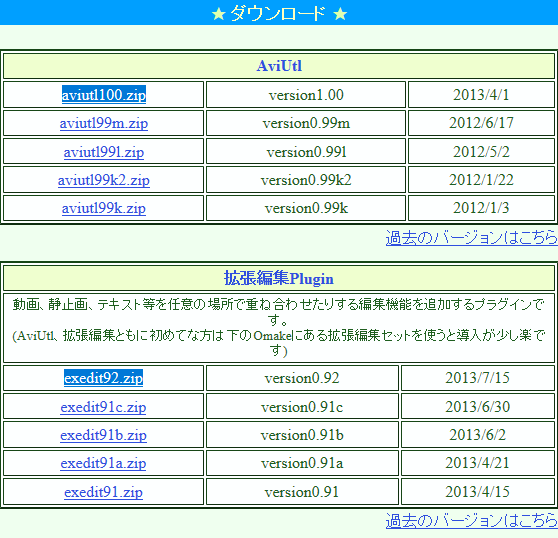

動画編集ソフト AviUtl (エイ･ブイ･アイ ユティル)
戻る
特徴
不要な場面のカット、動画のリサイズ、クロッピング、黒ベタ追加、動画連結、音声入れ替え、音ズレ補正、コーデック による映像音声圧縮、インターレース解除 といった基本操作に加え、画質補正、色調補正、テキスト / 画像 / 動画 / モザイク / トランジション効果 の合成... 等々の操作を行うことができます。 拡張性が非常に高く、機能や対応フォーマットをどんどん追加していくことができます。「AviUtl」は、高機能な動画編集ソフトです。
インターフェースはすっきりとしていてシンプルな感じですが、動画の基本編集はこれ 1 本でも良いくらい多機能なところが最大の特徴。
また、プラグインが豊富にあり、拡張性が非常に高いところもポイントの一つ。
この「AviUtl」で実行できる編集操作には、下記のようなものがあります。
動画に、テキスト / 画像 / 図形 / 動画 等を合成
動画に、モザイク / 発光 / 振動 / ラスター / 色ずれ / シーンチェンジ 等のフィルタをかける 不要な場面のカット
動画と動画の連結
動画の音声入れ替え
ノイズ除去
シャープ
ぼかし
適用プラグイン
| 機能 | プラグイン名 | 備考 |
| 入力 | L-SMASH_Works_r877_plugins | avi形式以外に対応。 |
| 出力 | x264guiEx_2.43 | x264guiEx は、H.264という動画形式で保存するためのプラグイン で、AviUtlを使ううえで事実上必須。 |
| 拡張編集 | exedit92 | |
| カット編集 | cutedit2014-02-08 | |
| リサイズ | ResizeFilter |
便利な設定
■最大画像サイズの変更
規定値は、幅は1280、高さは720までの動画しか読み込めないので、もっと大きなものも読み込めるように設定します。
①「ファイル」→「環境設定」で「システムの設定」をクリックする。
②「 最大画像サイズ 」で「幅」を1920、「高さ」を1080に変更する
③ AviUtlを再起動する。
ダウンロード
●AviUtl本体と拡張編集へのリンク
下記のように、本体は、aviutl100.zipをクリックしますと、ダウンロードが開始されます。
拡張編集は、exedit92.zipをクリックしますと、ダウンロードが開始されます。
